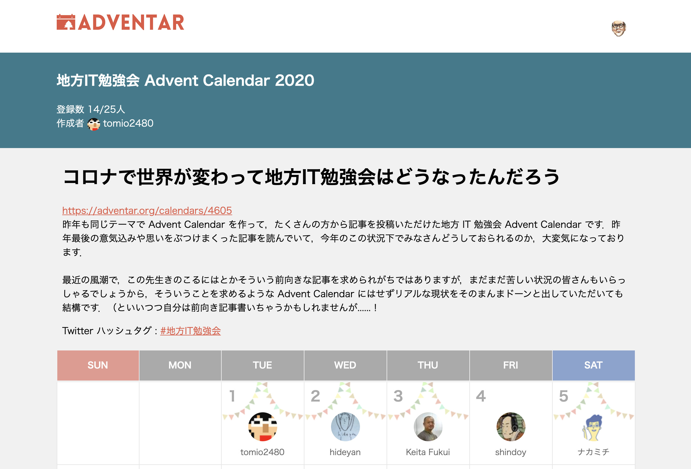
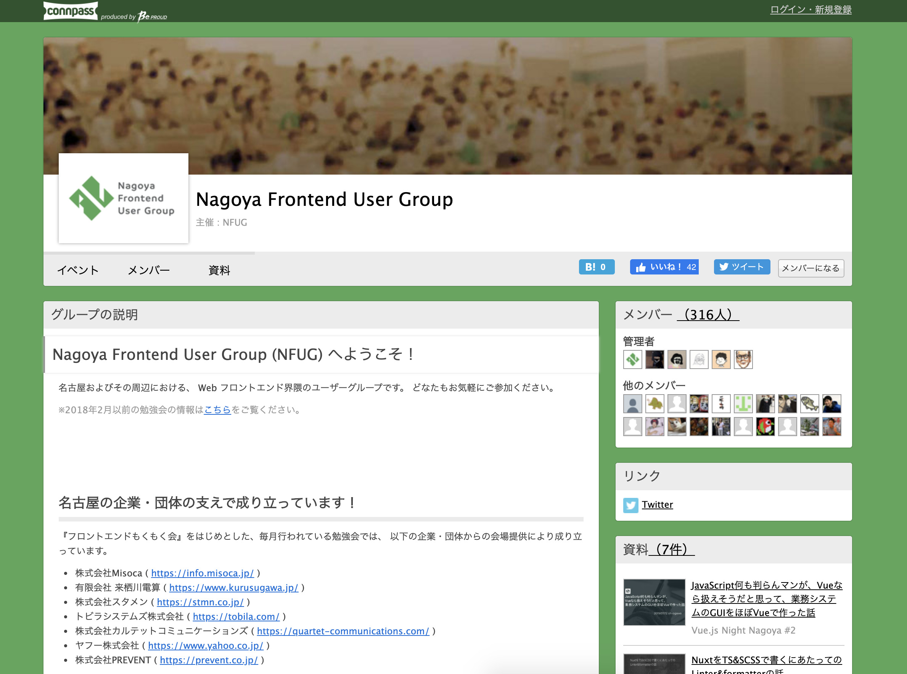
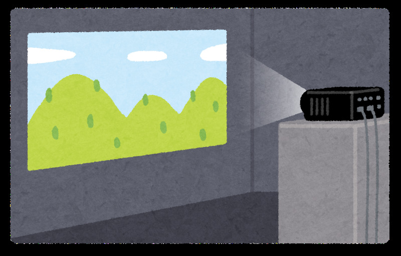
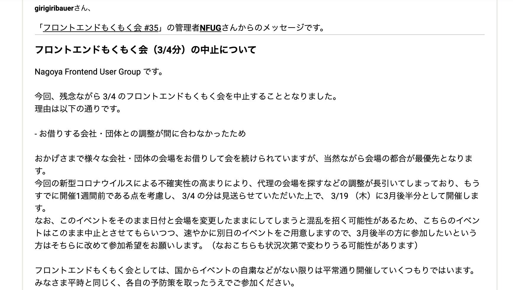
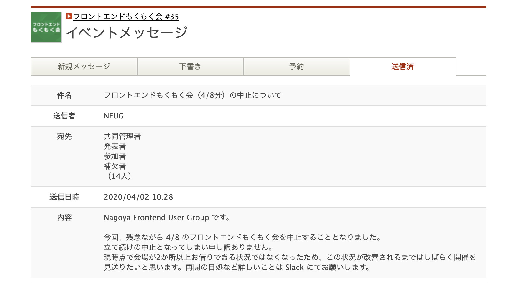
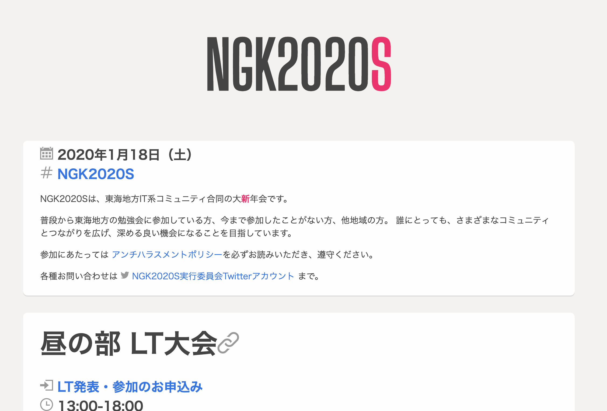

地方の勉強会コミュニティは、何もしてないとすぐに死ぬ
この記事は書かれてから1年以上が経過しており、最新の情報とは異なる可能性があります
地方IT勉強会 Advent Calendar 2020 の8日目の記事です。
最近アウトプットしてなかったですが、 このまましないのもアレなので最後に勉強会やれなかった話をブログに書こうと思います。

最近の風潮で，この先生きのこるにはとかそういう前向きな記事を求められがちではありますが
残念ながら前向きな話は一切ございません。
目次
さすがに今までどうやってたかを共有しないと、どうなったかの話はできないので、 その辺適度に振り返ります。
何の勉強会を行ってきたか（コロナ前）
Nagoya Frontend User Group (以下 NFUG) という勉強会で、 たまに発表形式、それ以外は月に1〜2回、もくもく会の形式で勉強会を行っています。

前身となるものも含めたら2012年末くらいからやっています。 特に 前半は発表形式中心 にやっていましたが、色々模索した結果今の もくもく会中心 の形に落ち着いています。
なんでそうなったかというと・・・
- 月1のペースでテーマ変えて発表形式で開催
- 東京に人が流れる
- 残る人に負担が増える
- 飛ばす月が増える（今月やめよっか）
- 無理にやると疲れる or やらないと廃れる
ここまで書けば 「あとは分かるな？」 という感じですね・・・。
発表形式を定期的にやるの、地方にはしんどいんですよ〜。 定期的にやっていらっしゃる方、尊敬しかない。
あっちなみに NFUG は個人の会ではなく、みんなの会、ユーザーのための会（大事）です。 僕は言い出しっぺではありますが主催とかではなく、ただ音頭を取っているだけです。 みんなの会なので、みんなに負担が極力いかないようにしたい。
特徴
こんな特徴を持っています。
- 名古屋で頑張っていらっしゃる企業・団体さんの会場を順に借りている
- （もくもく会）スクリーンを活用して、誰が何やってるかを見えるように
- 懇親会は、本編の続きの話で盛り上がりやすい
- お仕事の接点になることもある
- 他業種からの転職組が参加しやすい
色々掘り下げちゃうと今年の話が出来なくなるので、一旦箇条書きで。
どのように勉強会を行ってきたか（コロナ前）
こういう狙いで今までやってきました、という話も大事なので、 どのように勉強会を行ってきたか、についても書いておきます。
- 運営頑張らない （≒勉強会疲れを起こさないようにする）
- 負担は極力分散したい、特定の人だけ頑張らないようにする
- 会社や個人に依存しないコミュニティ、つまり全員が対等
- （もくもく会）スクリーンに写すことで やりとりの活性化を促す
僕個人がそう思っている、という話ではありますが、会としても一定そう考えている節はあります。 ここも全部触れると話広がりすぎちゃうので、後の話に関係するところだけピックアップします。
運営頑張らない
頑張っている人もいて、決して否定しているわけではなく、むしろ尊敬しかないのですが、 僕は 頑張らずに続けていけるような仕組みになっていないと、なかなか長くは続けられない と思います。
長く続けることは重要か？ という意見もあるかもしれませんが、 灯台のように、地方に勉強会があること はかなり大事だと思っています。
僕は東京へ人がいくこと自体を良いことだと捉えていますが、反面同じだけ人が地方に入ってくるべきだと思っていて、 東京から戻ってきた人にとって、集まれるコミュニティが存在していないのは悲しいことです。
他地方でも数多く観測してますが、以下の流れが多いです。
- 地方勉強会を主催の人のパワーでなんとかする
- 主催の人が東京へ就職・転職する
- 会が廃れる、開かれなくなる
これは悲しいので、出来る限り継続性を考えて、運営頑張らないように心がけています。
（もくもく会）スクリーンに写すことでやりとりの活性化を促す
誰ももくもく会をやってる風景の写真とか撮ってないからなーw

（想像図）
もはや昨今では色んなところでもくもく会とかが気軽に開かれてると思うんですけど、 NFUG のフロントエンドもくもく会では、 （強制はしないまでも） スクリーンに写して作業して、自ら写しながら質問したり、あるいは写してる人に対して質問したりといったやりとり を、比較的重視、推奨してます。
たぶんカフェで1人でやるのと比べて大きな違いはここになるんじゃないかと思います。 モブプロにも近いかもしれませんね。
以下の効能があります。
- 分からない段階では質問自体を言語化しづらい が、視覚を通じてどういう問題かを共有できる
- 他の人がどういう環境で作業しているのか、発表だけだと見えない面も知ることができる
- ショートカットなどを駆使している人や、ツールや設定にこだわりのある人など、 意図しなかった気付き がある
- 懇親会で、この人これやってた人だって脳内でラベリングできる
特に質問を言語化できてない段階で共有する、ってのが超大事だし、 意図しなかった気付きがあるっていうのも超大事だし、 写して共有することのメリット は計り知れないものがあると思います。
あと懇親会でけっこう本編の続きの話になりがちなのも、ちゃんと画面写してどの人が何をやっていたかが分かるからこそです。 画面を写して何もくもくしてるかを見せることは、自己紹介よりも自己の紹介になります。
2020年どうなったか
ずーん。

ずずーん。

もう3月4月と中止が相次ぎ、結局そのまま今に至ります。
オンラインでもくもく会とかはうまくいきそうになかったのでやってないです。
理由は以下。
- スクリーンに写すことでやりとりの活性化を促す => 難しい
- 自らの作業をしながら、誰かがスクリーンに写す、という構造が取りにくい
- そもそも、オンラインでシングルスクリーンだと 他人が何をもくもくしてるか分からない
- 意図しなかった気付きは生まれなさそう
- 懇親会の難易度が上がる
- オンライン前提
- 本編という話のタネがなくなる
もちろんコストかけて工夫して、同じ効果が出るように持っていくのは不可能ではないかもしれません。
ですが、一番大事な・・・
- 運営がんばらない
これに反する流れになりそうだったので、 今までやってきた形をオンライン化することは一旦諦めました。
「あっ緩やかに死んでる」と気づいたイベントページの話
これは直近の話。
名古屋では、毎年 NGK （名古屋合同懇親会） なるコミュニティ横断のイベントが開かれています。
ちなみに昨年のやつ。

前回（つまり今年頭）の懇親会の場で・・・
「負荷分散大事ですよねー Web サイトくらいなら NFUG の人たちのもくもく会の題材にでもすればみんなやりたがるはず・・・！」
的な話（意訳）がされたので、 NFUG にてイベントページやる流れになったまではいいものの、 まさか今年こうなるとは誰も思わず、 NFUG も実質休眠状態というか、3月4月から誰も何も活動してない状態だったので、
「いつもやってる NGK のイベントページをみんなで作ろう！」
って言ったところで、ほとんどの人が反応せず・・・。 勉強会コミュニティは動いてないと簡単に死ぬ 、というのを今まさに実感しています。
こんなに 勉強会に対して何もしなかった年は久々 だったので、 やらないという選択肢も実はあったんだと新鮮に思う反面、 勉強会コミュニティは何もやってないと本当に簡単に死んでしまうなと、しみじみ感じています。怖い。
来年どうする
さて、どうしましょうね・・・。
- 感染対策にコストかけるのしんどい （コミュニティ側としても、会場側に依頼するとしても）
- 少なくともリアルの懇親会でわーっとやることはしばらく無さそう
- そもそも 地域の勉強会コミュニティの存在意義とは
もくもく会として同じ効果を狙っていくのは、まだしばらく無理そうな気がしていますが、 別の形 で何らか継続していくのはまたやってもいいんじゃないかなあと思ってます。
Slack でも触れて、少し反応が返ってきた話ではあるんですけど、 例えば 『コード読み読み会』 とか良いと思うんですけどね。
- 基本オンライン
- テーマがそれぞれのもくもく会と異なり、同じものに対してみんなで取り組む、シングルスクリーンでも成立しそう
- 最初から半分懇親会を兼ねる（お酒飲みたい人は手元に用意）
- ファシリテートどうする、参加人数どれくらい許容できる？
これ以上はやってみて問題出さないと分からないですが、 今までやってたもくもく会を無理にオンラインに持ち込むよりは有意義な気はします。
まあ、あと、あれです。 ずっと名古屋にいるかどうかも分からないし？w
まとめ
とまあ、結論出てないですが、供養としてのブログ記事はこの辺にしておきます。 良かったら Slack は全員自由に入れるようになっているので、勉強会ページから辿ってもらって、 そこで意見などくれると嬉しいです。 Twitter でもいいよ！
この記事は書かれてから1年以上が経過しており、最新の情報とは異なる可能性があります